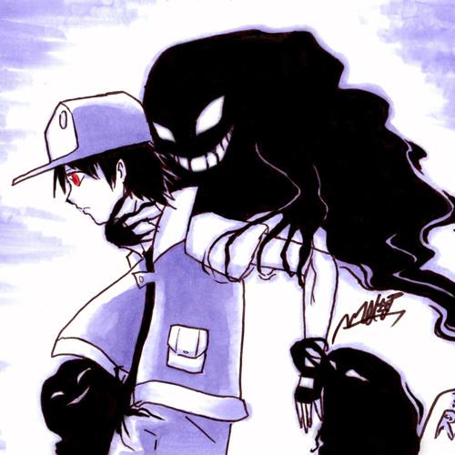
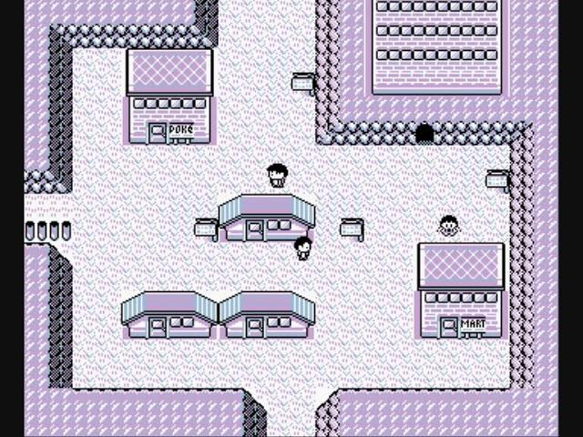
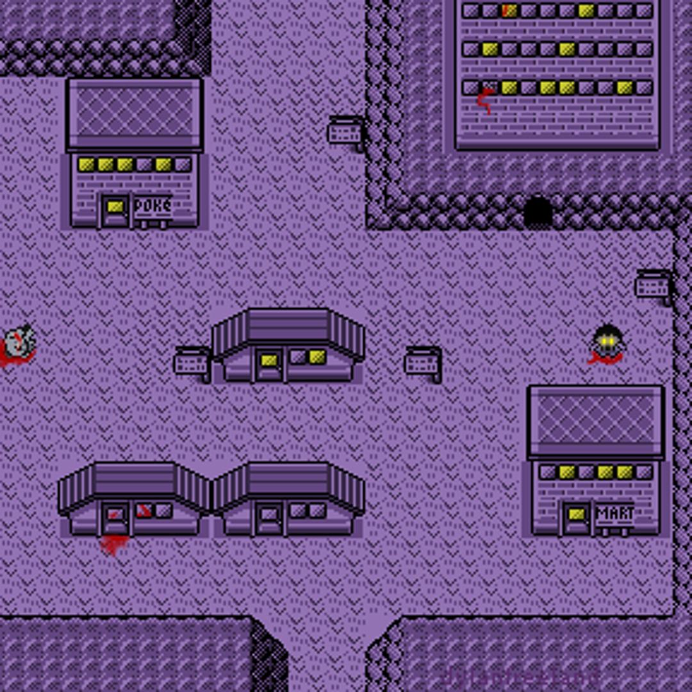
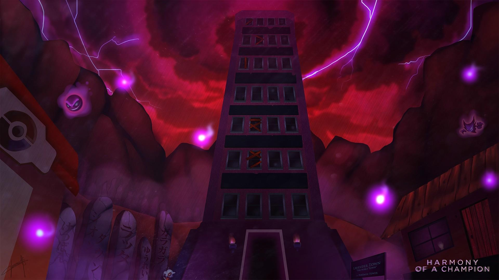

CREEPYPASTA
LAVENDER
TOWN
Lavender Town é uma cidade fictícia dos jogos Pokémon Red e Blue, conhecida por sua atmosfera sombria e por abrigar a Pokémon Tower, uma torre relacionada a Pokémon falecidos. A cidade inspirou uma lenda urbana da internet que afirma que a música original da região teria provocado efeitos negativos em crianças que jogaram as versões japonesas dos jogos.



O QUE ACONTECE?
Segundo a lenda, uma versão da música de Lavender Town teria utilizado frequências sonoras capazes de causar dores de cabeça, alterações de comportamento e outros efeitos psicológicos em crianças. Algumas versões da história afirmam que diversos casos teriam ocorrido após o lançamento dos jogos no Japão.
A narrativa também menciona supostas mudanças na música e relatos de incidentes que teriam sido encobertos pelos responsáveis pelo jogo. Entretanto, essas alegações não possuem comprovação confiável e fazem parte de uma história de terror criada e difundida na internet.
No jogo original, a atmosfera melancólica da cidade está relacionada à temática de luto presente na Pokémon Tower.

CARACTERÍSTICAS
play_arrow ORIGEM
Cidade introduzida nos jogos Pokémon Red e Pokémon Blue, lançados originalmente no Japão em 1996.
person PRINCIPAL PERSONAGEM
Lavender Town não possui um protagonista único; a lenda concentra-se na cidade, em sua música e nos relatos fictícios associados a ela.
skull APARÊNCIA
Cidade em estilo pixel art, com construções simples, tons arroxeados e uma atmosfera melancólica.
warning LOCAL
Lavender Town, especialmente a Pokémon Tower, uma torre do universo Pokémon relacionada aos Pokémon falecidos.

CURIOSIDADES
- Lavender Town faz parte oficialmente do universo Pokémon.
- A lenda sobre os efeitos da música ficou conhecida como “Lavender Town Syndrome”.
- A história se espalhou por fóruns, vídeos e sites dedicados a mistérios da internet.
- Não existem evidências confiáveis de que a música tenha provocado os incidentes descritos na lenda.
- A música e a atmosfera da cidade continuam sendo lembradas por fãs como alguns dos elementos mais sombrios dos primeiros jogos Pokémon.
